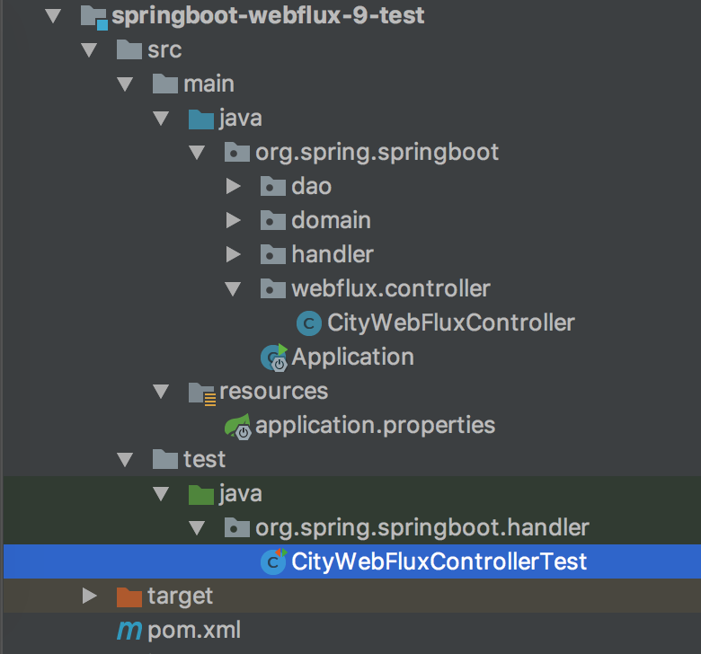

- 01 导读：课程概要.md.html
- 02 WebFlux 快速入门实践.md.html
- 03 WebFlux Web CRUD 实践.md.html
- 04 WebFlux 整合 MongoDB.md.html
- 05 WebFlux 整合 Thymeleaf.md.html
- 06 WebFlux 中 Thymeleaf 和 MongoDB 实践.md.html
- 07 WebFlux 整合 Redis.md.html
- 08 WebFlux 中 Redis 实现缓存.md.html
- 09 WebFlux 中 WebSocket 实现通信.md.html
- 10 WebFlux 集成测试及部署.md.html
- 11 WebFlux 实战图书管理系统.md.html
- 捐赠
10 WebFlux 集成测试及部署
前言
在日常工作中，免不了自测 UT，因为覆盖率不达标，是不允许提交测试，那怎么进行 WebFlux 项目的测试呢。@WebFluxTest 是 WebFlux 测试的重要注解。
结构
回到这个工程中，使用 springboot-webflux-3-mongodb 工程，工程如图：

目录核心如下：
- pom.xml 添加 Test 相关依赖；
- test / CityWebFluxControllerTest WebFlux API 测试类；
POM 依赖
pom.xml 添加对应的测试依赖：
<!-- Spring Boot Test 依赖 -->
<dependency>
<groupId>org.springframework.boot</groupId>
<artifactId>spring-boot-starter-test</artifactId>
<scope>test</scope>
</dependency>
<dependency>
<groupId>io.projectreactor</groupId>
<artifactId>reactor-test</artifactId>
<scope>test</scope>
</dependency>
CityWebFluxControllerTest WebFlux API 测试类
@WebFluxTest 用于测试 Spring WebFlux 控制器，支持自动配置 Spring WebFlux 基础组件，可以限制扫描范围等。
代码如下：
@RunWith(SpringRunner.class)
@SpringBootTest(webEnvironment = SpringBootTest.WebEnvironment.RANDOM_PORT)
public class CityWebFluxControllerTest {
@Autowired
private WebTestClient webClient;
private static Map<String, City> cityMap = new HashMap<>();
@BeforeClass
public static void setup() throws Exception {
City wl = new City();
wl.setId(1L);
wl.setProvinceId(2L);
wl.setCityName("WL");
wl.setDescription("WL IS GOOD");
cityMap.put("WL", wl);
}
@Test
public void testSave() throws Exception {
City expectCity = webClient.post().uri("/city")
.contentType(MediaType.APPLICATION_JSON)
.body(BodyInserters.fromObject(cityMap.get("WL")))
.exchange()
.expectStatus().isOk()
.expectBody(City.class).returnResult().getResponseBody();
Assert.assertNotNull(expectCity);
Assert.assertEquals(expectCity.getId(), cityMap.get("WL").getId());
Assert.assertEquals(expectCity.getCityName(), cityMap.get("WL").getCityName());
}
}
代码详解：
- @WebFluxTest 注入了 WebTestClient 对象，用于测试 WebFlux 控制器，好处是快速，并无需启动完整 HTTP 容器。
- WebTestClient.post() 方法构造了 POST 测试请求，并使用 uri 指定路由。
- expectStatus() 用于验证返回状态是否为 ok()，即 200 返回码。
- expectBody(City.class) 用于验证返回对象体是为 City 对象，并利用 returnResult 获取对象。
- Assert 是以前我们常用的断言方法验证测试结果。
运行 Test，得到如图验证结果：
工程运行方式
了解工程服务器部署，先了解工程如何运行。
上面使用应用启动类运行工程，这是其中一种工程运行方式。Spring Boot 应用的运行方式很简单，下面介绍下这三种运行方式。
1. 使用应用启动类
在 IDEA 中直接执行应用启动类，来运行 Spring Boot 应用，日常开发中，会经常使用这种方式启动应用。常用的会有 Debug 启动模式，方便在开发中进行代码调试和 bug 处理。自然，Debug 启动模式会比正常模式稍微慢一些。
2. 使用 Maven 运行
通过 Maven 运行，需要配置 Spring Boot Maven 插件，在 pom.xml 配置文件中，新增 build 节点并配置插件 spring-boot-maven-plugin，代码如下：
<build>
<plugins>
<!-- Spring Boot Maven 插件 -->
<plugin>
<groupId>org.springframework.boot</groupId>
<artifactId>spring-boot-maven-plugin</artifactId>
</plugin>
</plugins>
</build>
在工程根目录中，运行如下 Maven 命令来运行 Spring Boot 应用：
mvn spring-boot:run
实际调用的是 pom.xml 配置的 Spring Boot Maven 插件 spring-boot-maven-plugin，上面执行了插件提供的 run 指令。也可以在 IDEA 右侧工具栏的 Maven Project Tab 中，找到 Maven 插件的 spring-boot-maven-plugin，执行相应的指令。所有指令如下：
# 生成构建信息文件
spring-boot:build-info
# 帮助信息
spring-boot:help
# 重新打包
spring-boot:repackage
# 运行工程
spring-boot:run
# 将工程集成到集成测试阶段，进行工程的声明周期管理
spring-boot:start
spring-boot:stop
3. 使用 Java 命令运行
使用 Maven 或者 Gradle 安装工程，生成可执行的工程 jar 后，运行如下 Java 命令来运行 Spring Boot 应用：
java -jar target/xxx.jar
这里运行了 spring-boot-maven-plugin 插件编译出来的可执行 jar 文件。通过上述三种方式都可以成功运行 Spring Boot 工程，成功运行输出的控制台信息如图 1-10 所示。

工程服务器部署
基础环境安装如上面说的，需要 JDK 环境、Maven 环境等。
Win 服务器
推荐使用 AlwaysUp：

使用方式也很简单：

Linux 服务器
推荐 yum 安装基础环境，比如安装 JDK：
yum -y list java*
yum -y install java-1.8.0-openjdk*
java -version
安装 Maven：
yum -y list apache-maven
sudo wget http://repos.fedorapeople.org/repos/dchen/apache-maven/epel-apache-maven.repo -O /etc/yum.repos.d/epel-apache-maven.repo
sudo yum install -y apache-maven
mvn --v
Linux 使用 nohup 命令进行对后台程序的启动关闭。
关闭应用的脚本：stop.sh
启动应用的脚本：start.sh

重启应用的脚本：stop.sh

总结
这一篇主要一起实践了简单的 WebFlux API 控制层的测试，Service 测试 Mock 和以前一样，以及工程运行、服务器部署的操作。
工程：springboot-webflux-9-test。
© 2019 - 2023 Liangliang Lee. Powered by gin and hexo-theme-book.